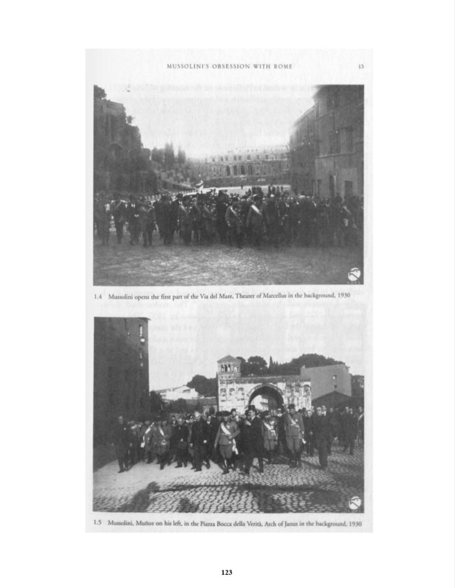

M
'~'OLI
I'\
B~ES\l
WITH
RO\IF.
I \
I.
Mu!>.
olini
opens
the
first
pan
of
che
ia
del
Mare,
1
heat ·r
of
Marc
Uu
in
the
b.t
kgr
und,
1930
1.5
lu
lini,
Munoz
n
h' I
ft,
in
t.h
Pi.w..l
Boc
.a
ddb
Vcrita,
Ar
h o janus
in
the b
•round,
1930
123

Previous Page
Next Page